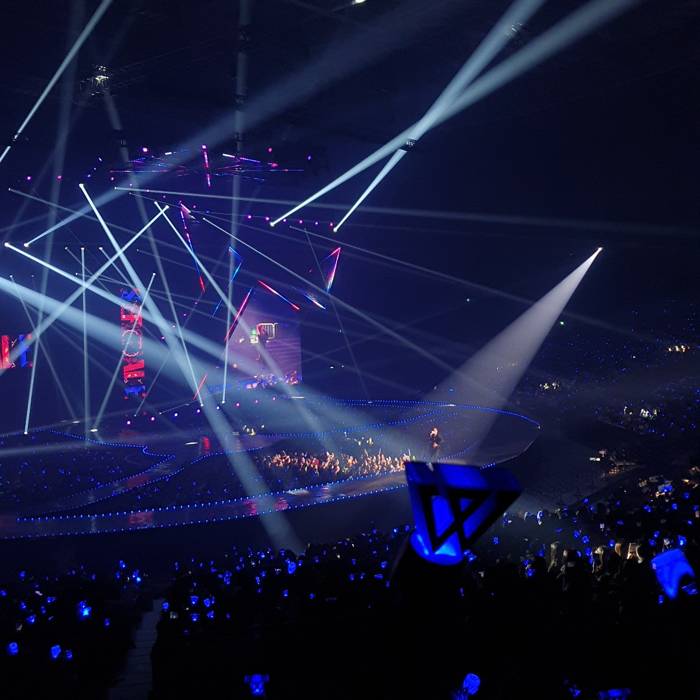

2014년 6월부터 8월까지, YG 엔터테인먼트는 YG 블로그와 유튜브를 통해 위너의 티저 이미지와 영상 시리즈를 대중들에게 공개 했다. 위너는 8월 6일 서울 영등포구 여의도동 콘래드호텔에서 열린 데뷔 론칭쇼에서 공식 데뷔를 알렸다. 그들은 2014년 8월 12일 첫 정규 앨범 《2014 S/S》의 음원을 공개한 후, 8월 14일 음반을 발매하였다. 위너는 8월 17일 음악 프로그램 《SBS 인기가요》로 공식 데뷔 무대를 가졌고, 그룹의 공식 팬클럽 명인 "이너 서클"(Inner Circle)을 공개했다. 위너는 앨범 발매에 이어, 그들의 공식 유튜브 채널에 2편의 뮤직 비디오를 공개하였고 얼터너티브 락 곡인 〈컬러링〉과 미드-템포 힙합 곡의 〈공허해〉는 업로드 된지 24시간만에 100만 조회수를 기록했다. 또한 그들의 앨범은 발매와 동시에 각종 유명 음원 차트의 1위를 올킬하며 "괴물 신인"으로 불렸다. 그룹은 홍콩, 말레이시아, 인도네시아, 싱가포르와 타이완의 아이튠즈 차트에서 최고 1위를 차지했으며, 빌보드 월드 앨범 차트에서도 1위를 차지했다. 그들은 《엠카운트다운》 의 데뷔 무대에서 음악 방송 첫 1위를 차지하였고, 이것은 남자 신인중에서 가장 빠른 1위 기록이다. 8월 30일, 송민호의 솔로 곡 〈걔 세〉의 뮤직 비디오에 멤버들이 카메오로 출연했다.

2014년 9월 10일, 위너는 그들의 일본 데뷔에 앞서 첫 일본 정규 앨범 《2014 S/S: Japan Collection》 을 발매하였고, 9월 11일부터 10월 11일까지 첫 번째 일본 단독 콘서트 투어를 개최하였다. 그룹은 그들의 투어를 성공적으로 마무리하며, 통산 25,000명의 관객수를 동원했다. 2014년 12월 9일, 미국의 유명 매체 "퓨즈"(Fuse)가 선정한 2014년 유망한 신인 아티스트 13인에 샘 스미스, 즈네이 아키코와 찰리 XCX와 함께 선정 되었는데, 이는 한국 가수중에서는 유일하다. 12월 17일 패션지 "데이즈드 디지털"은 2014 K-pop TOP20으로 그들의 곡 〈컬러링〉을 10위에 선정하였다.